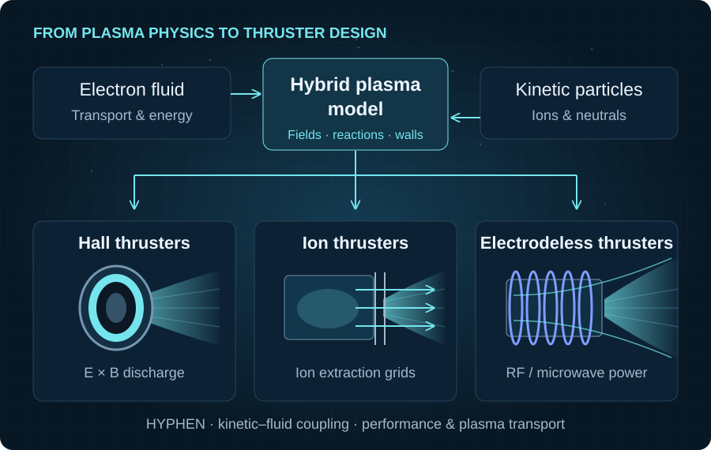

Physics & computationNumerical modeling of
Numerical modeling of
plasma-based space propulsion
I develop hybrid kinetic–fluid models to resolve plasma transport, electromagnetic coupling, and interactions with walls. Applications span Hall thrusters, ion thrusters, and electrodeless plasma thrusters.
My work in HYPHEN includes magnetized electron-fluid modeling and new numerical methods, including the development of Cartesian-mesh approaches in HYPHEN-CM.
Related project: ASCENT